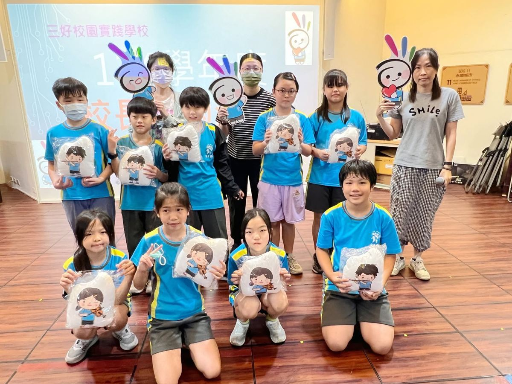
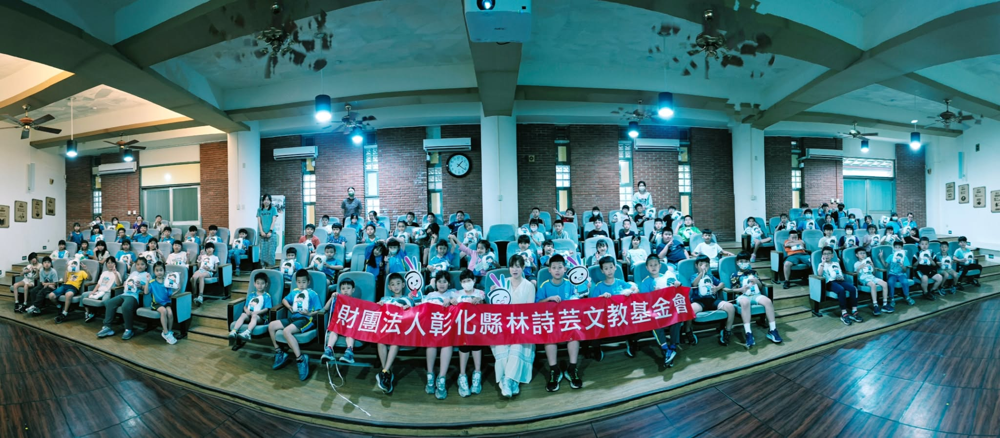
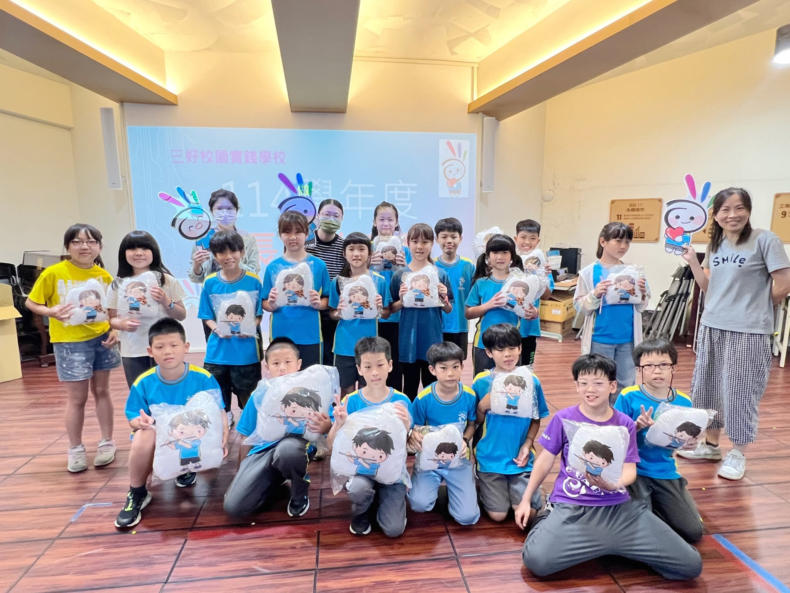

More than a week after the first gathering for our older students, "A Date with the Principal" returned — this time welcoming grades one through four for a special noon-hour celebration. The conference room was packed with eager children whose excitement was impossible to hide, every face showing how much they treasured being there. For first-graders, this was their very first "Date with the Principal" — their eyes wide with wonder and anticipation. Their older schoolmates in grades two, three and four set a wonderful example: sitting quietly, waiting patiently, and listening attentively to every word shared, showing through their actions just how much they valued what they had worked hard to earn.
"A Date with the Principal" is a small, heartfelt celebration of recognition. To earn their invitation, each child had to collect two to four honor cards — each one stamped and verified by teachers. Those stamps represent not only hard work, but also good character, excellent behavior, and a positive attitude toward learning. Every stamp is a teacher's affirmation; every card is a precious admission ticket earned drop by drop through steady effort, making this end-of-term gathering all the more special.

In this session, the principal shared the story of a hedgehog. A hedgehog's spines are there to protect it — but they can unknowingly hurt those who draw near, keeping others at a distance. In life, we sometimes encounter people like this: they may have a quick temper, carry private burdens, or act in ways they do not always intend.
In those moments, the principal encouraged the children to practice the Three Goods:
💖 Think Good (存好心) — approach others with understanding and a generous heart.
🗣️ Speak Good (說好話) — let warm, kind words replace criticism and blame.
🤝 Do Good (做好事) — take the initiative to show care, accompany, and help those around you.
When we are willing to approach others with goodwill, and meet sharp edges with gentleness, those around us can feel the sincerity and warmth we offer. In accompanying and understanding one another, we do not only help others — step by step, we become better versions of ourselves.
May every Hsinmin child keep doing good, speaking good, and thinking good. Let the seeds of kindness take root and grow across our campus, as we build together a learning community filled with warmth and care.

時隔一個多禮拜後，一至四年級的「與校長有約」活動再次登場！午間時刻，爆滿的會議廳滿是參加這次約會的孩子們，他們難掩雀躍的心情，眼神中看得出很珍惜這份榮耀。第一次參加與校長有約的一年級小朋友，臉龐更是充滿新奇與期待；二、三、四年級的學長姊則展現出良好的風範，安靜坐好、專心等待，認真聆聽每一個步驟與分享，用行動展現對自己努力成果的珍惜。
與校長有約活動是孩子們累積二至四張的榮譽卡，獲得的與校長約會的小小表揚大會。榮譽卡上有許多老師們的驗證，這些表揚的章，不只是孩子們努力的證明，更是他們的好品格、優秀的行為表現或學習態度的實際呈現，每一枚榮譽章都代表著老師們對孩子的肯定。孩子們透過不斷的努力，一點一滴地累積，才能在期末獲得這張珍貴的入場券，參加與校長的特別約會。
這次的校長說故事分享中，我們一起帶領孩子們認識了一隻可愛的刺蝟。刺蝟有著保護自己的尖刺，雖然無意傷害別人，卻常在不經意間讓他人受傷，使大家不敢靠近。生活中，我們也會遇到這樣的人，也許他有自己的脾氣、情緒或困難，有些並非刻意為之。
這時候，我們可以存著三好精神——
💖 存好心：用理解與包容的心看待他人。
🗣️ 說好話：用溫暖的言語代替批評與責怪。
🤝 做好事：主動關心、陪伴與幫助身邊的人。
當我們願意以善意接近他人，用溫柔化解尖刺，相信對方也能感受到那份真誠與溫暖。在彼此陪伴與理解的過程中，不只是幫助了別人，也讓自己一步步成為更好的人。
期待新民的孩子們持續做好事、說好話、存好心，讓善的種子在校園中發芽茁壯，共同營造充滿溫暖與關懷的學習環境。